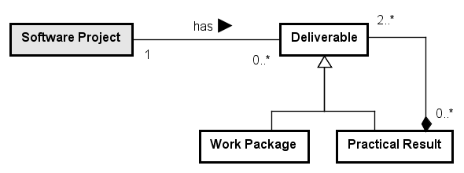

No definition in Astah file
Networked ontologies used by SPMO:
| Ontology | Relation | Integration Level |
| SPO - Software Process Ontology | High | |
| SwAO - Software Artifact Ontology |
Figure 1 presents the packages of the SPMO Modularization.
Figure 1. SPMO Modularization.
The Project Management Ontology (PMO) is defined as a layer over the Software Process Ontology, addressing aspects related to scope, time & duration, and cost estimation of intended processes, as well as aspects related to tracking planned versus performed processes.
No definition in Astah file
Figure 2 presents the conceptual model of the WBS subontology.

Figure 2. WBS conceptual model.
No definition in Astah file
No definition in Astah file
Figure 3 presents the conceptual model of the Estimated Process subontology.

Figure 3. Estimated Process conceptual model.
No definition in Astah file
No definition in Astah file
Figure 4 presents the conceptual model of the Tracked Process subontology.

Figure 4. Tracked Process conceptual model.
The following table shows the definitions for SPMO concepts.
| Concept | Definition |
| Corrective Action Register
|
Information Item describing an action to eliminate the cause or reduce the likelihood of recurrence of a detected nonconformity or other undesirable situation. [ISO/IEC/IEEE 24765]
Ex.: an additional developer shall be allocated for Project X; a new agreement on the requirements change shall be obtained from the client. |
| Cost Estimated Activity
|
A Project Activity with cost estimated.
|
| Cost Estimated Process
|
A Project Process with cost estimated. |
| Deliverable
|
|
| Duration Estimated Activity
|
A Project Process with duration estimated.
|
| Duration Estimated Process
|
A Project Process with duration estimated.
|
| Estimated Activity
|
A Project Activity with scope, cost, duration and time estimated.
|
| Estimated Process
|
A Project Process with cost, duration and time estimated.
|
| Estimated Stakeholder Allocation
|
|
| Practical Result
|
|
| Project Manager
|
Stakeholder responsible for managing a Project.
|
| Project Plan
|
Document describing the planning of a Project, to be used as the basis for project management.
|
| Scope Estimated Activity
|
A Project Activity with its scope in the project defined in terms of the work packages that it shall produce.
|
| Tracked Activity
|
|
| Tracked Process
|
|
| Tracked Stakeholder Participation
|
|
| Work Package
|
|
<<subkind>>Corrective Action Register |
Noncompliance Register (0..*) <>-- (0..*) Corrective Action Register
Noncompliance Resolution creates Corrective Action Register
| Cost Estimated Activity |
| Cost Estimated Process |
<<mode>>Deliverable |
Practical Result (0..*) <>-- (2..*) Deliverable
Software Project (1..1) has (0..*) Deliverable
| Duration Estimated Activity |
| Duration Estimated Process |
| Estimated Activity |
Tracked Activity (0..1) tracked in relation to (1..1) Estimated Activity
Estimated Stakeholder Allocation (0..*) is to perform (1..1) Estimated Activity <<mediation>>
| Estimated Process |
Tracked Process (0..1) tracked in relation to (1..1) Estimated Process
| Estimated Stakeholder Allocation |
Estimated Stakeholder Allocation (0..*) is to perform (1..1) Estimated Activity <<mediation>>
Tracked Stakeholder Participation (0..*) refers to (1..1) Estimated Stakeholder Allocation
| Practical Result |
Practical Result (0..*) <>-- (2..*) Deliverable
<<role>>Project Manager |
Project Manager is in charge of Quality Assurance Planning
<<subkind>>Project Plan |
Quality Assurance Planning uses Project Plan
| Scope Estimated Activity |
Scope Estimated Activity (1..*) is to produce (1..*) Work Package
| Tracked Activity |
Tracked Activity (0..1) tracked in relation to (1..1) Estimated Activity
Tracked Activity (0..*) contributes to produce (1..*) Work Package
| Tracked Process |
Tracked Process (0..1) tracked in relation to (1..1) Estimated Process
| Tracked Stakeholder Participation |
Tracked Stakeholder Participation (0..*) refers to (1..1) Estimated Stakeholder Allocation
| Work Package |
Tracked Activity (0..*) contributes to produce (1..*) Work Package
Scope Estimated Activity (1..*) is to produce (1..*) Work Package